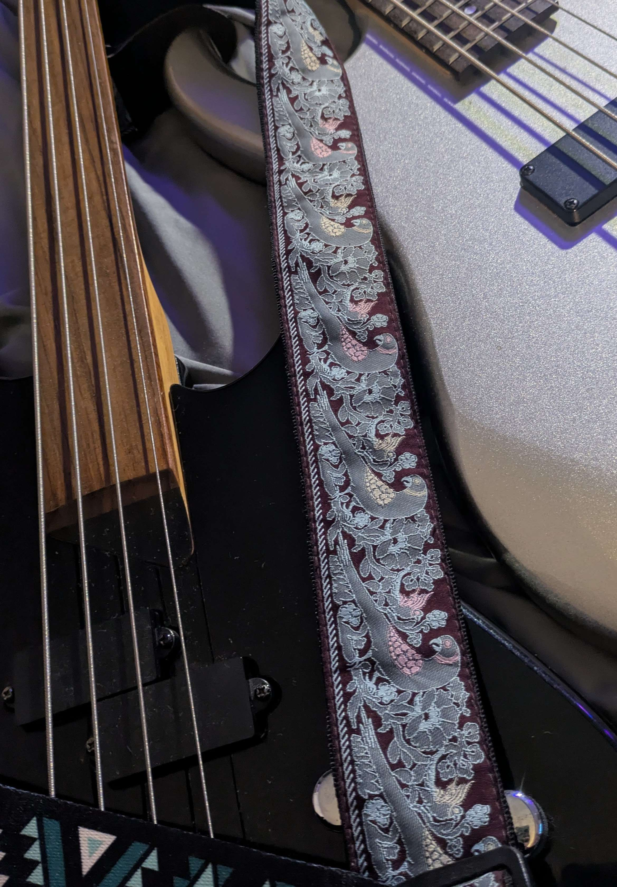
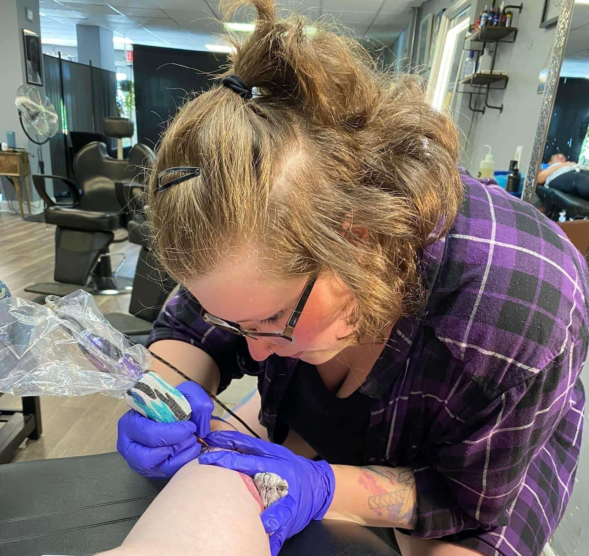

aesthetics+design >> meeting << the mind
Casey Marie Studio
A multidisciplinary practice moving between sound, image, object, body, and space—guided by curiosity, emotional honesty, and the conviction that every medium has something different to reveal.
About Casey
Welcome.


I’m Casey Marie—a multidisciplinary artist and researcher exploring the space where art, science, and human experience intersect.
I’ve never been comfortable staying inside a single discipline. To me, art, music, design, architecture, technology, and science have always been different expressions of the same curiosity. I’m endlessly fascinated by patterns, by the relationships between seemingly unrelated ideas, and by the possibility that creativity can reveal something we’ve overlooked.
Life has changed my direction more than once. Living with multiple sclerosis has challenged nearly every assumption I had about what a “normal” life would look like. But it has also taught me something unexpected: curiosity is remarkably resilient.
Repeatedly pushed off course by the unpredictable nature of the disease, learning to carve my own path became part of the job of living with MS. I’ve learned skills I might never otherwise have considered. I built this website. I practice prompt engineering and stress-test AI systems. I’ve learned to embrace the discomfort of not knowing, trust in myself, and recognize that every new skill may eventually connect to something larger.
Whether you’re here to explore, collaborate, or simply satisfy your own curiosity, I’m grateful you stopped by.
Contact / Follow / Collaborate
Continue the conversation.
For collaborations, commissions, professional inquiries, or a closer look at the work, connect directly through the channels here.